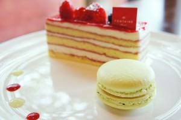
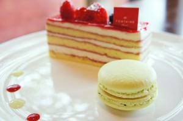

ABOUT
このブログは、色んなカフェのケーキはもちろん、コーヒーや紅茶、そしてときにはお料理など … とにかく私のカフェ巡りを綴っていく、おいしいもの満載のプライベートブログです。
最近カメラを買ったので、いつもカメラ片手にカフェ巡りをしています。おいしそうな写真が撮れたら … というスタイルで、のんびり更新していきますのでよろしくお願いします！
カフェ好き、ケーキ好きの方に限らず、どなたでもお気軽にコメントいただけるとうれしいです！
P.S 私は食いしん坊ではありません …
このブログは、色んなカフェのケーキはもちろん、コーヒーや紅茶、そしてときにはお料理など … とにかく私のカフェ巡りを綴っていく、おいしいもの満載のプライベートブログです。
最近カメラを買ったので、いつもカメラ片手にカフェ巡りをしています。おいしそうな写真が撮れたら … というスタイルで、のんびり更新していきますのでよろしくお願いします！
カフェ好き、ケーキ好きの方に限らず、どなたでもお気軽にコメントいただけるとうれしいです！
P.S 私は食いしん坊ではありません …